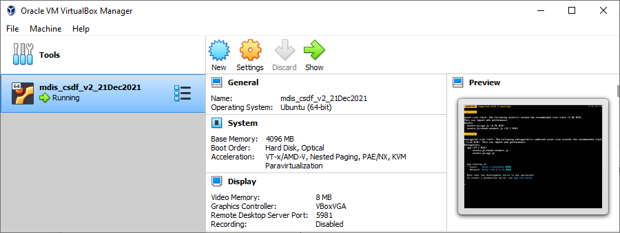
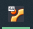
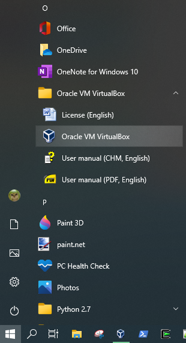
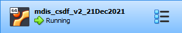
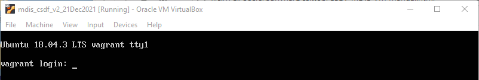
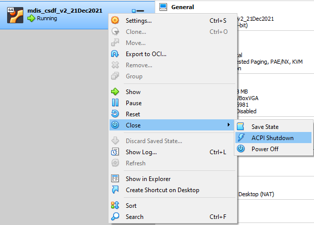

CSDF mDIS VirtualBox VM User's Guide
January 5, 2022
Table of Contents
Introduction
Starting Oracle VirtualBox
Starting the mDIS VM in VirtualBox
Running the mDIS application
Stopping the mDIS VM in VirtualBox
Connecting to mDIS
Creating Backups
Troubleshooting
Introduction
The mobile Drilling Information System (mDIS) application runs in a virtual machine (VM)
on the Oracle VirtualBox application.
To access the mDIS, both the Oracle VirtualBox application
and the mDIS VM must be running, which looks like this.

Additionally, the mDIS application must be running within the mDIS VM.
To check this, view the VM's window by clicking the green "Show" arrow in VirtualBox,
or by clicking the VM's Taskbar icon, which looks like this: 
If the mDIS application is running correctly, you should see this:

If you see both of the above, you should be able to connect to mDIS.
If not, follow the appropriate steps below.
Starting Oracle VirtualBox
Oracle VirtualBox is a Windows application.
You should see its icon on the Taskbar:  Click the icon to launch VirtualBox.
Click the icon to launch VirtualBox.
If the VirtualBox icon isn't in the Taskbar, navigate to Oracle VM VirtualBox in the Start Menu and use the icon to launch:

Starting the mDIS VM in VirtualBox
In VirtualBox, the mDIS VM state should be Running, which looks like this.

If the VM state is anything other than Running (Saved, Powered Off, Paused, etc),
run the VM by clicking the green Start arrow.

Eventually the VM state will change to "Running", and the label of the green Start arrow will change to "Show".
Running the mDIS application
Once the mDIS VM is running in VirtualBox, you can click the green Show arrow to view the VM window.
If it looks like this, the mDIS application is running properly. You should be able to connect to mDIS.
If it looks like this, the mDIS application needs to be run.

First, login with the following credentials:
Login: vagrant
Password: vagrant
You should now see something like this:

Enter the following commands exactly, hitting enter after each:
cd proj/mdis
sudo docker-compose up -d
Now you should see something like this:

Enter one last command:
npm run serve
Now you'll see progress messages like this for a minute or two:

After the build is complete, you should see the image at the top of this section. You can now
connect to mDIS.
Stopping the mDIS VM in VirtualBox
In general, there should be no need to manually stop the mDIS VM. If you turn off your computer while
the VM is running in VirtualBox, its state will be Saved automatically.
To stop the mDIS VM, right-click the VM in VirtualBox, navigate to "Close" in the menu,
and select one of the three options:

If you choose "Save State", the mDIS application should resume running when the VM is started back up.
If you choose "ACPI Shutdown" or "Power Off", you'll need to run the mDIS application
when the VM is started back up.
Connecting to mDIS
In your browser, enter localhost:3030 into the address bar and hit Enter.
You should see the mDIS login page.

Use the following credentials to login:
Login: dev1
Password: dev1pw
Creating Backups
Backups of the mDIS VM data are created using Snapshots in VirtualBox.
To take a Snapshot, click the menu in the VM item and choose "Snapshots":

Then click the "Take" button. Enter a name and description of the snapshot, then click OK.
The snapshot files are saved in a folder called Snapshots on the Desktop. Open that folder
and find the SAV file with the most recent date. This is the Snapshot you just created. Copy
that file to an external drive to backup.
Troubleshooting
After I click the mDIS VM window, I can't see my mouse cursor!
When clicked, the VM window will "capture" the mouse until it is released. To do so, press
the Control key on the right (not left) side of the keyboard. You should then be able to
use the mouse as usual.
In VirtualBox, the VM state isn't "Running", but the green Start/Show arrow is disabled!
This can happen if the VM is waiting for the user to respond to a warning or error message.
Look in the Taskbar for the VM window's icon , click it to view the VM,
then respond to the message. This should enable the green Start/Show arrow.
I see warnings when starting up the mDIS VM!
These warnings can safely be ignored.